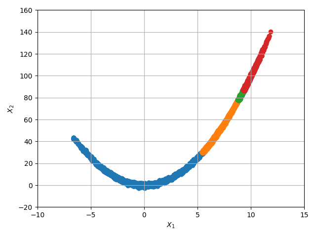
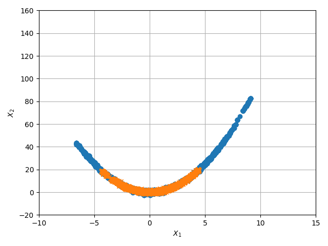

Note
Go to the end to download the full example code. or to run this example in your browser via Binder
Rosenbrock performance function
Import the necessary libraries
import matplotlib.pyplot as plt
import numpy as np
import scipy.stats as stats
from UQpy import PythonModel
# Import this newly defined Rosenbrock distribution into the Distributions module
from UQpy.distributions import Normal
from UQpy.reliability import SubsetSimulation
from UQpy.run_model.RunModel import RunModel
from UQpy.sampling import ModifiedMetropolisHastings, Stretch
# First import the file that contains the newly defined Rosenbrock distribution
from local_Rosenbrock import Rosenbrock
ModifiedMetropolisHastings Initial Samples
m = PythonModel(model_script='local_Rosenbrock_pfn.py', model_object_name="RunPythonModel")
model = RunModel(model=m)
dist = Rosenbrock(p=100.)
dist_prop1 = Normal(loc=0, scale=1)
dist_prop2 = Normal(loc=0, scale=10)
x = stats.norm.rvs(loc=0, scale=1, size=(100, 2), random_state=83276)
mcmc_init1 = ModifiedMetropolisHastings(dimension=2, log_pdf_target=dist.log_pdf, seed=x.tolist(),
burn_length=1000, proposal=[dist_prop1, dist_prop2],
random_state=8765)
mcmc_init1.run(10000)
sampling=Stretch(log_pdf_target=dist.log_pdf, dimension=2, n_chains=1000, random_state=38546)
x_ss_MMH = SubsetSimulation(sampling=sampling, runmodel_object=model, conditional_probability=0.1,
nsamples_per_subset=10000, samples_init=mcmc_init1.samples)
for i in range(len(x_ss_MMH.performance_function_per_level)):
plt.scatter(x_ss_MMH.samples[i][:, 0], x_ss_MMH.samples[i][:, 1], marker='o')
plt.grid(True)
plt.xlabel(r'$X_1$')
plt.ylabel(r'$X_2$')
plt.yticks(np.arange(-20, 180, step=20))
plt.xlim((-10, 15))
plt.tight_layout()
plt.show()
print(x_ss_MMH.failure_probability)
4.0450000000000015e-08
Stretch Initial Samples
m = PythonModel(model_script='local_Rosenbrock_pfn.py', model_object_name="RunPythonModel")
model = RunModel(model=m)
dist = Rosenbrock(p=100.)
x = stats.norm.rvs(loc=0, scale=1, size=(100, 2), random_state=83276)
mcmc_init2 = Stretch(dimension=2, log_pdf_target=dist.log_pdf, seed=x.tolist(),
burn_length=1000, random_state=8765)
mcmc_init2.run(10000)
sampling=Stretch(log_pdf_target=dist.log_pdf, dimension=2, n_chains=1000, random_state=83456)
x_ss_Stretch = SubsetSimulation(sampling=sampling, runmodel_object=model, conditional_probability=0.1,
nsamples_per_subset=10000, samples_init=mcmc_init2.samples)
for i in range(len(x_ss_Stretch.performance_function_per_level)):
plt.scatter(x_ss_Stretch.samples[i][:, 0], x_ss_Stretch.samples[i][:, 1], marker='o')
plt.grid(True)
plt.xlabel(r'$X_1$')
plt.ylabel(r'$X_2$')
plt.yticks(np.arange(-20, 180, step=20))
plt.xlim((-10, 15))
plt.tight_layout()
plt.show()
print(x_ss_Stretch.failure_probability)
plt.figure()
plt.plot(mcmc_init2.samples[:, 0], mcmc_init2.samples[:, 1], 'o')
plt.plot(mcmc_init1.samples[:, 0], mcmc_init1.samples[:, 1], 'x')
plt.grid(True)
plt.xlabel(r'$X_1$')
plt.ylabel(r'$X_2$')
plt.yticks(np.arange(-20, 180, step=20))
plt.xlim((-10, 15))
plt.tight_layout()
plt.show()
- 
- 
0.0004715000000000001
Total running time of the script: (0 minutes 7.803 seconds)